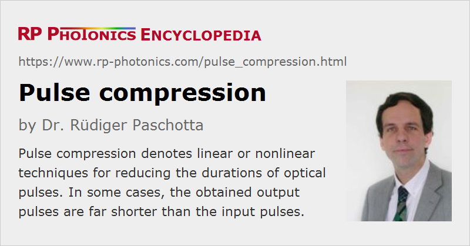

Pulse Compression
Definition: linear or nonlinear techniques for reducing the durations of optical pulses
More specific terms: adiabatic soliton compression, dispersive pulse compression, nonlinear pulse compression, soliton compression
Opposite terms: pulse stretching
German: Pulskompression, Pulsverkürzung
Categories: light pulses, methods
How to cite the article; suggest additional literature
Author: Dr. Rüdiger Paschotta
There is variety of methods for temporally compressing (shortening) optical pulses, i.e., reducing the pulse duration. Typically, such methods start in the picosecond or femtosecond region, i.e. already in the regime of ultrashort pulses. These methods can be grouped into two categories:
- Linear pulse compression: When pulses are chirped, their duration can be reduced by removing (or at least reducing) this chirp, i.e. by flattening the spectral phase. Dechirping can be accomplished by sending the pulses through an optical element with a suitable amount of chromatic dispersion (→ dispersion compensation), such as a pair of diffraction gratings (a grating compressor) [1, 6], a prism pair [7], an optical fiber, a chirped mirror, a chirped fiber Bragg grating or a volume Bragg grating. The smallest possible pulse duration is then set by the optical bandwidth of the pulses, which is not modified by dispersive (linear) compression. In the ideal case, bandwidth-limited pulses are obtained.
- Nonlinear pulse compression: In a first step, the optical bandwidth is increased, typically with a nonlinear interaction such as self-phase modulation. In most cases, this leads to chirped pulses, often with a duration which is even larger than the original pulse duration. Thereafter, the pulse duration can be strongly reduced by linear (dispersive) compression (see above), which removes or at least decreases the chirp.
A special case is compression using a chirped QPM structure [21]. Here, a χ(2) nonlinearity is used not for spectral broadening, but rather for frequency-converting a strongly chirped pulse such that the converted pulse is not chirped and thus much shorter.
Methods for Nonlinear Pulse Compression
Nonlinear pulse compression can be done with different configurations of optical elements, and with methods which are based on different physical principles. Some examples are:
- Originally unchirped pulses can be spectrally broadened by propagation in a normally dispersive optical fiber and then dispersively compressed as discussed above in the context of linear pulse compression [8]. The fibers used for spectral broadening may be standard optical fibers, photonic crystal fibers, or hollow fibers (for extremely intense pulses). It is possible e.g. to start with picosecond pulses from a mode-locked Nd:YAG laser and reach pulse durations far below 1 ps, or to generate few-cycle pulses starting from pulses with e.g. 50 fs duration.
- For high-intensity femtosecond pulses, the spectral broadening can be performed in a gas-filled hollow fiber or capillary [17]. Most of the optical power propagates in the gas, where self-phase modulation occurs. (The regime with ionization of the gas is avoided by staying at sufficiently low intensities.) Subsequent dispersive compression can be done, e.g., with double-chirped mirrors or some other kind of dispersive mirrors. This method is suitable e.g. for compressing 20-fs pulses with millijoule energies down to a few femtoseconds.
- After spectral broadening with a nonlinearity as described above, pulses can also be shorted by sending them through a suitable bandpass filter (and no dispersive element), if the filter bandwidth is well below the pulse bandwidth [43].
- When high-intensity few-cycle femtosecond pulses are injected into a gas jet, high harmonic generation can occur, and under certain circumstances pulse durations of a few hundred attoseconds are achieved [23, 24].
- In higher-order soliton compression [5, 39], a pulse with an energy far above the fundamental soliton energy is injected into a fiber with anomalous dispersion. After a certain propagation distance, a strongly compressed pulse can be obtained, but the choice of propagation distance can be critical. The pulse energy can be roughly one to two orders of magnitude above that of a fundamental soliton.
- In adiabatic soliton compression [10, 12], a soliton pulse is compressed during propagation in a fiber the anomalous dispersion of which becomes weaker and weaker along the propagation direction. Alternatively, the pulse energy can be increased by amplification in a doped fiber with constant dispersion properties. The pulse energy is fairly limited due to the small soliton pulse energies of typical fibers.
- In a fiber amplifier with normal dispersion, self-similar parabolic pulses experience spectral broadening while a high pulse quality is preserved [16]. The parameters of the input signal pulses are fairly uncritical, and high pulse energies are possible. The resulting linear chirp makes it relatively easy to obtain strong temporal compression in a subsequent dispersive optical element.
- Pulse compression can also occur during nonlinear frequency conversion [11, 21, 25, 32]. Under certain circumstances, frequency doublers or optical parametric oscillators can emit pulses which are much shorter than the pump pulses.
Which of these methods is most suitable depends on a number of circumstances, including the initial and required pulse duration, the pulse energy, and the demands on pulse quality.
Pulse compression setups can be analyzed and optimized using pulse propagation modeling.
Suppliers
The RP Photonics Buyer's Guide contains 20 suppliers for pulse compressors. Among them:
Questions and Comments from Users
Here you can submit questions and comments. As far as they get accepted by the author, they will appear above this paragraph together with the author’s answer. The author will decide on acceptance based on certain criteria. Essentially, the issue must be of sufficiently broad interest.
Please do not enter personal data here; we would otherwise delete it soon. (See also our privacy declaration.) If you wish to receive personal feedback or consultancy from the author, please contact him e.g. via e-mail.
By submitting the information, you give your consent to the potential publication of your inputs on our website according to our rules. (If you later retract your consent, we will delete those inputs.) As your inputs are first reviewed by the author, they may be published with some delay.
Bibliography
| [1] | E. B. Treacy, “Optical pulse compression with diffraction gratings”, IEEE J. Quantum Electron. 5 (9), 454 (1969), doi:10.1109/JQE.1969.1076303 |
| [2] | L. F. Mollenauer et al., “Experimental observation of picosecond pulse narrowing and solitons in optical fibers”, Phys. Rev. Lett. 45 (13), 1095 (1980), doi:10.1103/PhysRevLett.45.1095 |
| [3] | H. E. Bates, “Coherent birefringent optical pulse compression”, J. Opt. Soc. Am. 70 (8), 1017 (1980), doi:10.1364/JOSA.70.001017 |
| [4] | C. V. Shank et al., “Compression of femtosecond optical pulses”, Appl. Phys. Lett. 40, 761 (1982), doi:10.1063/1.93276 |
| [5] | L. F. Mollenauer et al., “Extreme picosecond pulse narrowing by means of soliton effect in single-mode optical fibers”, Opt. Lett. 8 (5), 289 (1983), doi:10.1364/OL.8.000289 |
| [6] | O. E. Martínez et al., “Negative group-velocity dispersion using refraction”, J. Opt. Soc. Am. A 1 (10), 1003 (1984), doi:10.1364/JOSAA.1.001003 |
| [7] | R. L. Fork et al., “Negative dispersion using pairs of prisms”, Opt. Lett. 9 (5), 150 (1984), doi:10.1364/OL.9.000150 |
| [8] | W. J. Tomlinson, R. H. Stolen, and C. V. Shank, “Compression of optical pulses chirped by self-phase modulation in fibers”, J. Opt. Soc. Am. B 1 (2), 139 (1984), doi:10.1364/JOSAB.1.000139 |
| [9] | R. L. Fork et al., “Compression of optical pulses to six femtoseconds by using cubic phase compensation”, Opt. Lett. 12 (7), 483 (1987), doi:10.1364/OL.12.000483 |
| [10] | H. H. Kuehl, “Solitons on an axially nonuniform optical fiber”, J. Opt. Soc. Am. B 5 (3), 709 (1988), doi:10.1364/JOSAB.5.000709 |
| [11] | A. Stabinis et al., “Effective sum frequency pulse compression in nonlinear crystals”, Opt. Commun. 86, 301 (1991), doi:10.1016/0030-4018(91)90009-3 |
| [12] | S. V. Chernikov et al., “Soliton pulse compression in dispersion-decreasing fiber”, Opt. Lett. 18 (7), 476 (1993), doi:10.1364/OL.18.000476 |
| [13] | P. Tournois, “New diffraction grating pair with very linear dispersion for laser pulse compression”, Electron. Lett. 29 (16), 1414 (1993), doi:10.1049/el:19930947 |
| [14] | S. V. Chernikov et al., “Comblike dispersion-profiled fiber for soliton pulse train generation”, Opt. Lett. 19 (8), 539 (1994), doi:10.1364/OL.19.000539 |
| [15] | M. Lai, S. T. Lai and C. Swinger, “Single-grating laser pulse stretcher and compressor”, Appl. Opt. 33 (30), 6985 (1994), doi:10.1364/AO.33.006985 |
| [16] | K. Tamura and M. Nakazawa, “Pulse compression by nonlinear pulse evolution with reduced optical wave breaking in erbium-doped fiber amplifiers”, Opt. Lett. 21 (1), 68 (1996), doi:10.1364/OL.21.000068 |
| [17] | M. Nisoli et al., “Generation of high energy 10 fs pulses by a new pulse compression technique”, Appl. Phys. Lett. 68, 2793 (1996), doi:10.1063/1.116609 |
| [18] | A. Baltuška et al., “Optical pulse compression to 5 fs at a 1-MHz repetition rate”, Opt. Lett. 22 (2), 102 (1997), doi:10.1364/OL.22.000102 |
| [19] | M. D. Pelusi and H.-F. Liu, “Higher order soliton pulse compression in dispersion-decreasing optical fibers”, IEEE J. Quantum Electron. 33 (8), 1430 (1997), doi:10.1109/3.605567 |
| [20] | M. Nisoli et al., “Compression of high-energy laser pulses below 5 fs”, Opt. Lett. 22 (8), 522 (1997), doi:10.1364/OL.22.000522 |
| [21] | A. Galvanauskas et al., “Chirped-pulse-amplification circuits for fiber amplifiers, based on chirped-period quasi-phase-matching gratings”, Opt. Lett. 23 (21), 1695 (1998), doi:10.1364/OL.23.001695 |
| [22] | Y. Matsui et al., “Generation of 20-fs optical pulses from a gain-switched laser diode by a four-stage soliton compression technique”, IEEE Photon. Technol. Lett. 11 (10), 1217 (1999), doi:10.1109/68.789696 |
| [23] | M. Drescher et al., “X-ray pulses approaching the attosecond frontier”, Science 291, 1923 (2001), doi:10.1126/science.1058561 |
| [24] | P. M. Paul et al., “Observation of a train of attosecond pulses from high harmonic generation”, Science 292, 1689 (2001), doi:10.1126/science.1059413 |
| [25] | J. Biegert and J.-C. Diels, “Compression of pulses of a few optical cycles through harmonic generation”, J. Opt. Soc. Am. B 18 (8), 1218 (2001), doi:10.1364/JOSAB.18.001218 |
| [26] | C.-M. Chen and P. L. Kelley, “Nonlinear pulse compression in optical fibers: scaling laws and numerical analysis”, J. Opt. Soc. Am. B 19 (9), 1961 (2002), doi:10.1364/JOSAB.19.001961 |
| [27] | T. Südmeyer et al., “Nonlinear femtosecond pulse compression at high average power levels by use of a large-mode-area holey fiber”, Opt. Lett. 28 (20), 1951 (2003), doi:10.1364/OL.28.001951 |
| [28] | B. Schenkel et al., “Generation of 3.8-fs pulses from adaptive compression of a cascaded hollow fiber supercontinuum”, Opt. Lett. 28 (20), 1987 (2003), doi:10.1364/OL.28.001987 |
| [29] | A. Couairon et al., “Pulse self-compression to single-cycle limit by filamentation in a gas with a pressure gradient”, Opt. Lett. 30 (19), 2657 (2005), doi:10.1364/OL.30.002657 |
| [30] | B. Schenkel et al., “Pulse compression with supercontinuum generation in microstructure fibers”, J. Opt. Soc. Am. B 22 (3), 687 (2005), doi:10.1364/JOSAB.22.000687 |
| [31] | G. Steinmeyer and G. Stibenz, “Generation of sub-4-fs pulses via compression of a white-light continuum using only chirped mirrors”, Appl. Phys. B 82, 175 (2006), doi:10.1007/s00340-005-2065-1 |
| [32] | J. Moses and F. K. Wise, “Soliton compression in quadratic media: high-energy few-cycle pulses with a frequency-doubling crystal”, Opt. Lett. 31 (12), 1881 (2006), doi:10.1364/OL.31.001881 |
| [33] | C. P. Hauri et al., “Intense self-compressed, self-phase-stabilized few-cycle pulses at 2 μm from an optical filament”, Opt. Lett. 32 (7), 868 (2007), doi:10.1364/OL.32.000868 |
| [34] | R. E. Kennedy et al., “High-peak-power femtosecond pulse compression with polarization-maintaining ytterbium-doped fiber amplification”, Opt. Lett. 32 (10), 1199 (2007), doi:10.1364/OL.32.001199 |
| [35] | J. Laegsgaard and P. J. Roberts, “Dispersive pulse compression in hollow-core photonic bandgap fibers”, Opt. Express 16 (13), 9628 (2008), doi:10.1364/OE.16.009628 |
| [36] | S. Bohman et al., “Generation of 5 fs, 0.5 TW pulses focusable to relativistic intensities at 1 kHz”, Opt. Express 16 (14), 16684 (2008), doi:10.1364/OE.16.016684 |
| [37] | S. Hädrich et al., “High energy ultrashort pulses via hollow fiber compression of a fiber chirped pulse amplification system”, Opt. Express 17 (5), 3913 (2009), doi:10.1364/OE.17.003913 |
| [38] | O. D. Mücke et al., “Self-compression of millijoule 1.5 μm pulses”, Opt. Lett. 34 (16), 2498 (2009), doi:10.1364/OL.34.002498 |
| [39] | A. A. Amorim et al., “Sub-two-cycle pulses by soliton self-compression in highly nonlinear photonic crystal fibers”, Opt. Lett. 34 (24), 3851 (2009), doi:10.1364/OL.34.003851 |
| [40] | J. Rothhardt et al., “1 MHz repetition rate hollow fiber pulse compression to sub-100-fs duration at 100 W average power”, Opt. Lett. 36 (23), 4605 (2011), doi:10.1364/OL.36.004605 |
| [41] | M. Miranda et al., “Simultaneous compression and characterization of ultrashort laser pulses using chirped mirrors and glass wedges”, Opt. Express 20 (1), 688 (2012), doi:10.1364/OE.20.000688 |
| [42] | A. Ricci et al., “Grism compressor for carrier–envelope phase-stable millijoule-energy chirped pulse amplifier lasers featuring bulk material stretcher”, Opt. Lett. 37 (7), 1196 (2012), doi:10.1364/OL.37.001196 |
| [43] | R. Lehneis et al., “Dispersion-free pulse duration reduction of passively Q-switched microchip lasers”, Opt. Lett. 37 (21), 4401 (2012), doi:10.1364/OL.37.004401 |
| [44] | S. Hädrich et al., “Nonlinear compression to sub-30-fs, 0.5 mJ pulses at 135 W of average power”, Opt. Lett. 38 (19), 3866 (2013), doi:10.1364/OL.38.003866 |
| [45] | K. F. Mak et al., “Two techniques for temporal pulse compression in gas-filled hollow-core kagomé photonic crystal fiber”, Opt. Lett. 38 (18), 3592 (2013), doi:10.1364/OL.38.003592 |
| [46] | X. Zhu et al., “Generation of 360 ps laser pulse with 3 J energy by stimulated Brillouin scattering with a nonfocusing scheme”, Opt. Express 23 (18), 23318 (2015), doi:10.1364/OE.23.023318 |
| [47] | C.-L. Tsai et al., “Efficient nonlinear compression of a mode-locked thin-disk oscillator to 27 fs at 98 W average power”, Opt. Lett. 44 (17), 4115 (2019), doi:10.1364/OL.44.004115 |
| [48] | P. Balla et al., “Postcompression of picosecond pulses into the few-cycle regime”, Opt. Lett. 45 (9), 2572 (2020) doi:10.1364/OL.388665 |
See also: ultrashort pulses, spectral phase, pulse propagation modeling, pulse duration, pulse stretchers, dispersion compensation, nonlinearities, self-phase modulation, adiabatic soliton compression, dispersive mirrors
and other articles in the categories light pulses, methods

This encyclopedia is authored by Dr. Rüdiger Paschotta, the founder and executive of RP Photonics Consulting GmbH. How about a tailored training course from this distinguished expert at your location? Contact RP Photonics to find out how his technical consulting services (e.g. product designs, problem solving, independent evaluations, training) and software could become very valuable for your business!
|  |
If you like this page, please share the link with your friends and colleagues, e.g. via social media:
These sharing buttons are implemented in a privacy-friendly way!